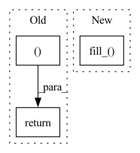

Pattern ID :3703

Before Change
// Default return value. Erring on the side of caution here by
// being super verbose.
return [([], [])]
After Change
// "Pair off" all the indices
max_index = torch.argmax(x)
fake_destroyers = torch.empty_like(infinite_pairs).fill_(max_index)
infinite_pairs = torch.stack(
(infinite_pairs, fake_destroyers), 1
)
In pattern: SUPERPATTERN
Frequency: 3
Non-data size: 3
Instances
Fragment ID: 13940806
Project Name: aidos-lab/pytorch-topological
Commit Name: 0dd25924d9fd7691de14281351dcee1edd8cfc26
Time: 2021-12-21
Author: bastian@rieck.me
File Name: torch_topological/nn/cubical.py
M Class Name: Cubical
N Class Name: Cubical
M Method Name: _extract_generators_and_diagrams(4)
N Method Name: _extract_generators_and_diagrams(4)
M Parent Class: nn.Module
N Parent Class: nn.Module
M File Name: torch_topological/nn/cubical.py
N File Name: torch_topological/nn/cubical.py
M Start Line: 88
M End Line: 119
N Start Line: 74
N End Line: 141
'>
Before Change
tconf = obj_mask.float()
return iou, class_mask, obj_mask, noobj_mask, tx, ty, tw, th, tcls, tconf, target_boxes
After Change
th = FloatTensor(nB, nA, nG, nG).fill_(0)
tcls = FloatTensor(nB, nA, nG, nG, nC).fill_(0)
target_boxes_grid = FloatTensor(nB, nA, nG, nG, 4).fill_(0)
// 2 3 xy
// 4 5 wf
// Convert to position relative to box
'>
Fragment ID: 13940807
Project Name: vcasecnikovs/yet-another-yolov4-pytorch
Commit Name: 33466abc5efadc3c73206b6667ef31166b8121c3
Time: 2020-05-24
Author: casecnikov@gmail.com
File Name: utils.py
M Class Name: AnonimousClass
N Class Name: AnonimousClass
M Method Name: build_targets(5)
N Method Name: build_targets(5)
M Parent Class:
N Parent Class:
M File Name: utils.py
N File Name: utils.py
M Start Line: 112
M End Line: 112
N Start Line: 56
N End Line: 120
'>
Before Change
assert inMask.dim() == 4, "mask must be 4 dimensions"
inMask = inMask.float()
ntimes = 2**nlayers
inMask = F.interpolate(inMask, (inMask.size(2)//ntimes, inMask.size(3)//ntimes), mode="nearest")
inMask = inMask.detach().byte()
return inMask
def cal_mask_given_mask_thred(img, mask, patch_size, stride, mask_thred):
assert img.dim() == 3, "img has to be 3 dimenison!"
After Change
inMask = Variable(inMask, requires_grad = False)
for id_net in range(conv_layers):
conv = nn.Conv2d(1,1,4,2,1, bias=False)
conv.weight.data.fill_(1/16)
convs.append(conv)
lnet = nn.Sequential(*convs)
if inMask.is_cuda:
'>
Fragment ID: 13940808
Project Name: kumapowerliu/rethinking-inpainting-medfe
Commit Name: 17d04d208950c9c4e2e8bc5251cf06205ec15285
Time: 2020-11-07
Author: 33801357+KumapowerLIU@users.noreply.github.com
File Name: util/util.py
M Class Name: AnonimousClass
N Class Name: AnonimousClass
M Method Name: cal_feat_mask(3)
N Method Name: cal_feat_mask(2)
M Parent Class:
N Parent Class:
M File Name: util/util.py
N File Name: util/util.py
M Start Line: 78
M End Line: 83
N Start Line: 76
N End Line: 93